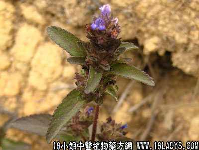

别名：本地夏枯草。
植物名：球花毛麝香。
生长环境：本品为一年生，粗壮草本。生长于小山岗草地上，或疏灌木林中的杂草处。
分布：广州近郊，此外，亚洲热带地区有分布。
（注）本科茎叶，形状芳香，味与毛麝相似，惟花序大不相同。
入药部分：全草。
采集期：夏、秋。
自采地点：山岗、湿地。
性味：性微凉、味微苦、气香。
功能：祛风、散热、解毒。
主治、用量和用法：1、治外感风热，配伍用；2、伤暑，配伍用；3、癍痧热症，配伍用；4、红肿热毒：干用煎水外洗。
验方：（治外感发热、癍痧热症方）大头陈1两、山芝麻5钱、狗肝菜5钱、岗梅根5钱、淡竹叶3钱、海金沙藤5钱、金丝草5钱、清水四晚，煎成一碗服。
（方解）大头陈为四时感冒发热常用药，春可治温热，夏可治暑热，性味辛凉，可治秋燥及冬寒化热。臣以山芝麻、岗梅，并治胃腑热而渴者。佐以狗肝菜以清肝、竹叶清心除烦，金沙藤、金丝草起导赤作用。使暑湿热邪从尿导之而为便，故可治风温暑热，寒邪化火之剂。
（方歌）感寒暑热或癍痧，大头陈合山芝麻，海金沙藤淡竹叶，岗梅丝草狗肝夸。